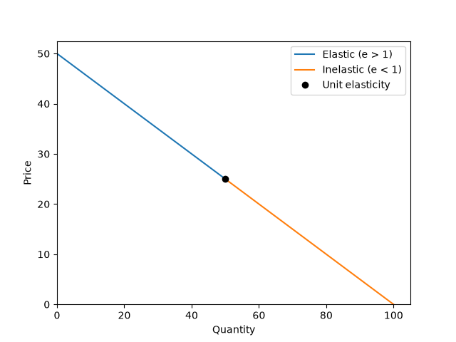

第 2 章: データ型と変数¶
2.1 この章の地図¶
この章では、弾力性を計算する関数を作りながら、Python の基本のデータ型と変数を学びます。
| 項目 | 内容 |
|---|---|
| 経済学の題材 | 価格弾力性・所得弾力性、財の分類（マインドマップ 5-1） |
| 使う Python の機能 | 整数 int、小数 float、文字列 str、真偽値 bool、変数、算術演算、比較 |
| 完成形 | price_elasticity、income_elasticity、classify_income_elasticity、is_price_elastic の 4 つの関数 |
| ファイル | 実装: lib/chapter02/elasticity.py、lib/chapter02/plot.py（弾力性の図）／テスト: test/chapter02/test_elasticity.py、test/chapter02/test_plot.py（自分で書くときは、practice/chapter02/ に、同じ名前で作ります） |
経済学の式とコードの対応¶
| 式 | 意味 | コードの名前 |
|---|---|---|
| 価格弾力性 = −(需要量の変化率) ÷ (価格の変化率) | 価格が 1% 上がると、需要量が何 % 減るか | price_elasticity |
| 所得弾力性 = (需要量の変化率) ÷ (所得の変化率) | 所得が 1% 増えると、需要量が何 % 増えるか | income_elasticity |
| 変化率 = (変化後 − 変化前) ÷ 変化前 | 元の値に対する変化の割合 | 変数 price_change_rate など |
第 1 章の需要曲線 Q = 100 − 2P を使います。価格が 10 から 12 に上がると、需要量は 80 から 76 に減ります。
2.2 予想する¶
次の問いに、手計算で答えてください。
- 価格 10 → 12 の変化率は何 % ですか
- 需要量 80 → 76 の変化率は何 % ですか
- 価格弾力性は、いくつになりますか。値が 1 より大きいか小さいかも答えてください
2.3 データ型と変数¶
数値: int と float¶
この節のコード片は、第 1 章で紹介した対話モード（uv run python）に、1 行ずつ打ち込んで、試せます。# から後ろは、結果の説明（コメント）なので、打ち込まなくてかまいません。
Python の数値には、整数 int と小数 float があります。
7 / 2 # 3.5 割り算の結果は、割り切れても float になる
7 // 2 # 3 商（切り捨て）
7 % 2 # 1 余り
2 ** 3 # 8 べき乗
弾力性の計算では、変化率を求めるために割り算 / を使います。
変数¶
名前に値を結び付けるのが、変数です。式の記号と同じ意味の名前を付けると、コードが式と対応します。
price_before = 10
price_after = 12
price_change_rate = (price_after - price_before) / price_before # 0.2
文字列: str¶
財の分類の結果は、文字列で返します。文字列は引用符で囲みます。
"奢侈品"
真偽値: bool¶
比較の結果は、True か False の真偽値になります。
0.25 > 1 # False
型ヒント¶
関数の引数や戻り値に、: float や -> float と書くのが、型ヒントです。第 1 章から、すでに使ってきました。
def is_price_elastic(elasticity: float) -> bool:
"""価格弾力性が 1 より大きければ弾力的。"""
return elasticity > 1
この関数は、「引数 elasticity は小数（float）で、結果は真偽値（bool）」という、人間と道具へのヒントです。Python は、実行するときには、型ヒントをチェックしません（整数を渡しても、動きます）。型ヒントが役に立つのは、エディタや mypy のような検査の道具が、型の合わない呼び出しを、実行する前に、教えてくれるときです。
int・float・str・bool のほかに、list[int]（整数のリスト）や dict[int, float]（整数をキー、小数を値にした辞書）のような書き方も、第 3 章から出てきます。-> None は、「何も返さない」という意味で、テストの関数に付けます。
計算の精度¶
小数の計算には、わずかな誤差があります。
0.1 + 0.2 # 0.30000000000000004
0.1 + 0.2 == 0.3 # False
この性質は、本章の実装でも現れます。所得弾力性を計算すると、期待値の 3 ではなく、次の値になります。
income_elasticity(300, 330, 20, 26) # 2.9999999999999996
そのため、小数の計算結果は == で比べず、テストでは pytest.approx を使い、近い値かどうかで確かめます。
2.4 プログラミング¶
Red: 価格弾力性のテスト¶
予想した手計算の値を、そのまま期待値にします。
def test_価格が2割上がり需要量が5パーセント減ると価格弾力性は0_25() -> None:
# 需要曲線 Q = 100 - 2P で、価格 10 -> 12 のとき需要量は 80 -> 76
result = price_elasticity(
price_before=10, price_after=12, quantity_before=80, quantity_after=76
)
assert result == pytest.approx(0.25)
Green: 実装¶
def price_elasticity(
price_before: float,
price_after: float,
quantity_before: float,
quantity_after: float,
) -> float:
"""価格弾力性 = -(需要量の変化率) / (価格の変化率) を返す。"""
if price_after == price_before:
raise ValueError("価格が変わらないので価格弾力性は求められない")
price_change_rate = (price_after - price_before) / price_before
quantity_change_rate = (quantity_after - quantity_before) / quantity_before
return -quantity_change_rate / price_change_rate
価格が変わらないと、0 で割ることになります。これは経済学的にも「弾力性が定義できない」場面なので、例外にしてテストで決めておきます。
def test_価格が変わらないと価格弾力性は求められない() -> None:
with pytest.raises(ValueError):
price_elasticity(
price_before=10, price_after=10, quantity_before=80, quantity_after=80
)
弾力性は、需要曲線の上で場所によって変わる¶
価格弾力性を、需要曲線 Q = 100 − 2P の上で、図にします。直線の傾きは一定ですが、弾力性は一定ではありません。

図の読み方:
- 曲線の上の 1 点での価格弾力性は、b × P ÷ Q で表せます（変化が小さいときの値）
- 真ん中の点（黒い丸、価格 25、数量 50）で、2 × 25 ÷ 50 = 1 になります
- それより価格が高い部分（青）は、弾力性が 1 より大きい（弾力的）。価格が 1% 上がると、需要量が 1% より多く減ります
- 価格が低い部分（オレンジ）は、弾力性が 1 より小さい（非弾力的）。価格が上がっても、需要量はあまり減りません
price_elasticity は、2 点の間の変化率で求めます。2 点が近いほど、この図の 1 点での値に近づきます。この図は、lib/chapter02/plot.py の plot_elasticity_regions が描きます。
所得弾力性と財の分類¶
所得弾力性は、符号が逆になるだけで価格弾力性とほぼ同じ形です。
def income_elasticity(
income_before: float,
income_after: float,
quantity_before: float,
quantity_after: float,
) -> float:
"""所得弾力性 = (需要量の変化率) / (所得の変化率) を返す。"""
if income_after == income_before:
raise ValueError("所得が変わらないので所得弾力性は求められない")
income_change_rate = (income_after - income_before) / income_before
quantity_change_rate = (quantity_after - quantity_before) / quantity_before
return quantity_change_rate / income_change_rate
所得弾力性の値で、財を分類します。境界の値（1.0 と 0.0）も、テストに含めます。
@pytest.mark.parametrize(
("elasticity", "expected"),
[
(3.0, "奢侈品"),
(1.0, "奢侈品"),
(0.5, "必需品"),
(0.0, "必需品"),
(-0.2, "下級財"),
],
)
def test_所得弾力性で財を分類する(elasticity: float, expected: str) -> None:
assert classify_income_elasticity(elasticity) == expected
@pytest.mark.parametrize は、同じテストを、値の組を変えて、繰り返し実行する書き方です。ここでは、elasticity と expected の組が 5 つあるので、同じテストが 5 回実行されます。1 つの組で失敗したときは、どの組で失敗したかが、表示されます。
def classify_income_elasticity(elasticity: float) -> str:
"""所得弾力性から財を分類する。
1 以上は奢侈品、0 以上 1 未満は必需品、負は下級財。
"""
if elasticity >= 1:
return "奢侈品"
if elasticity >= 0:
return "必需品"
return "下級財"
価格弾力性が 1 より大きいかどうかは、真偽値を返す関数にします。
def is_price_elastic(elasticity: float) -> bool:
"""価格弾力性が 1 より大きければ弾力的。"""
return elasticity > 1
予想の答え合わせ¶
予想した答えを、プログラムで確かめます。
from lib.chapter02.elasticity import is_price_elastic, price_elasticity
print((12 - 10) / 10 * 100)
print(round((76 - 80) / 80 * 100, 4))
e = price_elasticity(10, 12, 80, 76)
print(round(e, 4), is_price_elastic(e))
20.0
-5.0
0.25 False
- 1 つ目の問い: 価格の変化率は +20%（20.0）です。
- 2 つ目の問い: 需要量の変化率は −5%（−5.0）です。
- 3 つ目の問い: 価格弾力性は 0.25 で、
is_price_elasticはFalseです。1 より小さいので「非弾力的」、つまり価格が上がっても需要量があまり減らない財です。
実行結果¶
cd apps/economics-programming/python
uv run pytest test/chapter02
13 passed
2.5 規則で言うと¶
- 式の記号と同じ意味の名前を変数に付ける。
price_change_rateのように付けると、式とコードを見比べられる - 小数は
==で比べない。 近い値かどうかで比べる。テストではpytest.approxを使う - 定義できない場面は、例外にする。 価格が変わらないときの価格弾力性のように、式が成り立たない入力は、値を返さずに
ValueErrorにする
混同しやすい点を、表にまとめます。
| 混同しやすい点 | 違い |
|---|---|
| 価格弾力性の符号 | 需要曲線は右下がりなので、変化率の比は負になる。定義に「−」を付けて、正の値で表す |
| 弾力性が 1 より大きい / 小さい | 大きい（弾力的）は価格に敏感。小さい（非弾力的）は鈍感 |
| 下級財と奢侈品 | 所得が増えて需要量が減るのが下級財（所得弾力性が負）。所得以上に需要量が増えるのが奢侈品（1 以上） |
このモデルが成り立たない場面¶
弾力性は、小さな変化を前提にした値です。価格が大きく変わる場面では、変化前を基準にするか変化後を基準にするかで、値が変わります。また、需要曲線が直線のとき、曲線上の場所によって弾力性が変わります。たとえば Q = 100 − 2P で価格が 10 のときの弾力性は 2 × 10 ÷ 80 = 0.25 ですが、価格が 40 では 2 × 40 ÷ 20 = 4 です。
2.6 練習問題¶
| 種類 | 問題 |
|---|---|
| 想起 | 本文を閉じて、income_elasticity を自分で書いてください。その後、本文と見比べます |
| 生成 | 解説を見る前に、「価格弾力性が 1 のとき（単位弾力的）」を True で返す関数 is_unit_elastic を、テストから書いてください。小数の比較に注意します |
| 多様 | 価格が 40 → 42 のとき、需要量は 20 → 16 になります。価格弾力性を手計算し、テストで確かめてください |
| 交互 | 第 1 章の quantity_demanded を使い、価格が 10 → 12 のときの需要量を関数から求めて、price_elasticity に渡してください |
解答（先に自分で取り組んでから、開いてください）
想起: 本文と見比べて、所得が変わらないときに ValueError を出しているか、変化率の式（変化後 − 変化前）÷ 変化前になっているかを確かめます。
生成: == で比べると、誤差のある値が False になるので、math.isclose（ごく近いかどうか）を使います。
import math
def is_unit_elastic(elasticity: float) -> bool:
return math.isclose(elasticity, 1)
def test_弾力性が1なら単位弾力的() -> None:
assert is_unit_elastic(1.0) is True
def test_弾力性が1でなければ単位弾力的ではない() -> None:
assert is_unit_elastic(0.25) is False
assert is_unit_elastic(1.5) is False
def test_小数の誤差は許す() -> None:
assert is_unit_elastic(0.9999999999999999) is True
多様: 価格は 40 → 42 で +5%、需要量は 20 → 16 で −20% なので、価格弾力性は −(−20%) ÷ 5% = 4 です。
def test_価格が40から42のときの価格弾力性は4() -> None:
result = price_elasticity(
price_before=40, price_after=42, quantity_before=20, quantity_after=16
)
assert result == pytest.approx(4)
第 1 章の需要曲線 Q = 100 − 2P では、価格が高い所ほど、弾力性が大きくなります（価格 10 のとき 0.25、価格 40 のとき 4）。
交互: 需要量は、第 1 章の関数から求めます。
before = quantity_demanded(price=10, intercept=100, slope=2) # 80
after = quantity_demanded(price=12, intercept=100, slope=2) # 76
price_elasticity(10, 12, before, after) # 0.25
2.7 振り返り¶
- 予想した弾力性と、テストの結果は一致しましたか
- 小数の誤差で、どこが予想と違いましたか
- 弾力性を式で覚えるのと、コードで書くのとでは、何が違いましたか
2.8 まとめ¶
int・float・str・boolの 4 つのデータ型と、変数、算術演算、比較を学んだ- 価格弾力性と所得弾力性を関数にして、財を分類した
- 小数の計算には誤差があるので、
==ではなくpytest.approxで比べる
次の章では、リストと辞書を使って、需要表・供給表を表します。